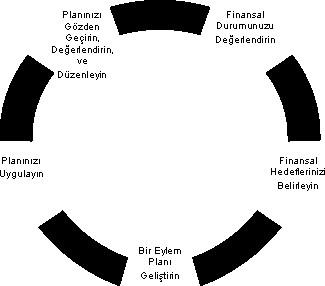

FİNANSAL PLANLAMA SÜRECİNİN 5 AŞAMASI
Eğer zengin olmak istiyorsanız çok para kazanan birini bulun ve onun yaptığını yapın.
J. Paul Getty
Konfüçyüs’ün sevdiğim bir sözü var: "Nereye gideceğini bilmiyorsan bütün yollar senin için makbuldür." Ulaşmak istediğimiz finansal hedefleri belirleyip onlara uygun bir finansal planlama yapmadığımızda, rotası olmayan ve denizde savrulup giden bir gemiden farkımız kalmaz. Finansal planlama sürekli güncellenmesi gereken ve değişen bir süreçtir, çünkü yaşam boyunca sosyal statümüz, gelir durumumuz, yaşam tarzımız farklılık gösterir. Tutarlı bir finansal planlamaya sahip olabilmek için aşağıdaki 5 aşamanın izlenmesi gerekir:
- Finansal Durumunuzu Değerlendirin:
Finansal planlamanın ilk aşaması şu anki finansal durumumuzu analiz etmekle başlar. Varlıklarınızın değeri nedir? Ne kadar kazanç elde ediyorsunuz? Nerelere, ne kadar harcama yapıyorsunuz? Tasarrufunuz var mı, varsa ne kadar? Yatırım alışkanlıklarınız neler? Bütün bu sorulara vereceğiniz cevaplar içinde bulunduğunuz finansal durumun resmini görmenizi sağlayacaktır. Finansal durumunuzu iyileştirmek ise harcama alışkanlıklarını düzenlemekle başlar. Bunun için düzenli olarak harcama kayıtlarınızı tutabilir ve sonrasında hangi gider kalemlerini azaltabileceğiniz ya da ortadan kaldırıp, tasarrufa ve yatırıma yöneltebileceğinizi kararlaştırabilirsiniz. - Finansal Hedeflerinizi Belirleyin:
Neyi istediğinizi bilmiyorsanız ona hiçbir zaman sahip olamazsınız. Finansal hedefleriniz arasında yeni bir ev-araba satın almak, çocuklarınızın eğitim masraflarını karşılamak, onları evlendirmek, emekliliğinizde yaşam standardınızı düşürmeyecek bir gelire sahip olmak, düzenli yurtdışı seyahatlerine çıkmak olabilir. Hedefleriniz ne olursa olsun, onlar uzun vadede tırmandığınız merdivenin basamakları gibidir, birine basmadan diğerine ulaşamazsınız ve çıktığınız basamağın sağlam olması da çok önemlidir. Başladığımız yere geri dönmek bize hem zaman hem de emek kaybettirir. - 
- Bir Eylem Planı Geliştirin:
Finansal planlamanın üçüncü aşaması bir eylem planı geliştirmektir. Hedeflerimiz şöyle ya da böyle farklılık gösterse de finansal bir eylem planında bulunması gereken ortak özellikler vardır. Bunlar esneklik, likidite, koruma ve vergi yükünün azaltılmasıdır: - Esneklik:
Plan yapmak gelecek hakkında öngörülerde bulunmak demektir. Bu durumda kesin ve net yargılardan uzak, değişen durumlara uydurabileceğimiz esneklikte bir plana sahip olmak en idealidir. Bütün nakdi varlıklarımızı bir gayrimenkule yatırırsak, ani bir iş kaybı ya da acil bir giderle karşılaşmamızın sonucunda o gayrimenkulü zararına satmak durumunda kalabiliriz! - Likidite:
Likidite, bir para sihirbazı olan Warren Buffet’ın finansal sağlamlık doktrininin anahtarıdır. Ona göre en güçlü şirketler istedikleri anda ihtiyaçları olan miktarda nakdi kasasında bulundurmayı başaranlardır. Bu kurumlar için olduğu kadar kişiler için de geçerlidir. Hayatta beklenmedik olaylar da başımıza gelebilir, hastalık, trafik kazası, iş kaybı vb. Bu risklerle karşılaşmamız durumunda zararımızı tazmin edebileceğimiz bir kaynağa sahip olmak bize ciddi tasarruf sağlar. Çünkü nakit olarak ihtiyati tasarruf tedbiri almamışsak elimizdeki ev, araba gibi nakdi olmayan varlıkları hemen nakde çevirmenin bedeli onları ortalama %20 zararına satmaktan geçer. Genel ekonomik krizlerin yaşandığı ülkelerde bu rakam daha da yüksek olabiliyor. - Koruma:
Başımıza gelmesi muhtemel kazanın, felaketin ya da hastalığın ölçeği büyük olursa ne olur? Ameliyat gerektiren bir hastalık, uzun tedaviler gerektiren bir kaza ya da doğal bir afet sonucu evinizin kullanılamaz hale gelmesi… Likidite kısa vadeli ve küçük hasarları karşılar ancak uzun vadede hepimizin sigortaya ihtiyacı vardır. Sigorta finansal bir gelecek güvencesidir ve başınızı yastığa koyduğunuzda rahatça uyumanızı sağlar. Bu yüzden başımıza gelmesi muhtemel zararları karşılayacak sigortalara sahip olmak finansal açıdan kritik öneme sahiptir. - Vergilerin Azaltılması:
Finansal planlama yaparken vergileri hesaba katmazsak, hedefimizden sapmamız kaçınılmaz bir hal alır. Dolayısıyla içinde bulunduğumuz vergi dilimini ve ödeyeceğimiz vergi miktarını göz önünde bulundurarak hesap yapmamız bizi daha tutarlı sonuçlara ulaştırır. Vergiler konusunda esas olan vergi ödemelerimizi minimize etmek değil,vergilerden sonraki kazancımızı maksimize etmektir.
Eylem planınızı hazırlarken bu dört faktörü bilmek size önemli avantajlar sağlar. Planınız yatırım stratejilerinizi, ev-araba gibi büyük satın alım kararlarınızı, emeklilik planlarınızı, sigorta planlamanızı, borçlarınız konusundaki yaklaşımınızı belirlemelidir. Bütün bunlar size çok karmaşık geliyor olabilir, bu durumda bir finansal danışmandan destek almanızda fayda vardır. Ancak finansal danışmanlık aldığınız durumlarda bile son kararı verecek olan yine siz olacaksınız.
- Planınızı Uygulayın:
Finansal planlamanın dördüncü aşaması yaptığımız planı uygulamaktır. Bu plana sadık kalabilmek oldukça zordur. Finansal planımız bir yol haritasıdır. Hedefe ulaşmamızı sağlayacak bir araçtır, amaç değil. Zaman zaman otoyoldan, zaman zaman patikalardan gidebiliriz. Önemli olan nereden gittiğimiz değil, nereye gittiğimizdir. Yanlış yollara girdiğiniz zamanlar da olacaktır ancak eğer doğru haritaya sahipseniz mutlaka hedefinize ulaşırsınız. - İlerlemenizi Gözden Geçirin, Yeniden Değerlendirin ve Düzenleyin:
Eğer Ankara’ya gitmek istiyorsanız ve elinizdeki harita sizi İzmir’e götürüyorsa ne yaparsınız? Haritayı değiştirmenin zamanı gelmiştir. Periyodik olarak finansal planımızı gözden geçirmek gerekir. Gerekirse yeniden bir plan yapmalı ya da şu anki planımızı düzenlemeliyiz. Bunu yaptığımızda yoldan çıkmamış olur ve sonunda mutlaka hedefimize ulaşırız. İyi yolculuklar…
Türkiye İstatistik Kurumu’nun verilerine göre ülkemizin nüfusu 68.393.000. Bu nüfusun 18.441.000 tanesi yoksul sınıfında yer alıyor. Bu veriye göre ülkemizin %26,96’sı yoksul yaşıyor. Hane halkı düşünüldüğünde ise toplam 16.447.000 hane halkının 3.693.000’i yoksulluk içinde. Hane halkı yoksulluk oranı ise % 22,45’e karşılık geliyor. Yaklaşık her dört kişiden birinin yoksul olduğu ülkemizde bunun önüne geçebilmenin mümkün olduğunu düşünüyor ve buna inanıyorum. Hiçbir şey başlangıçta bir hayal olmadan gerçekleşmez. İnsanoğlu hayal ettiği her şeyi gerçekleştirebilme kapasitesine sahiptir ve hayal gelecekle ilgilidir. Finansal planlama da gelecekle ilgilidir. Bununla ilgili beğendiğim bir söz var: "Ne istediğine dikkat et, çünkü onu elde edeceksin." |